| Paper | Year | Conference | Keywords | Paper Link | Code | ETH | HOTEL | UNIV | Zara1 | Zara2 | SDD |
|---|---|---|---|---|---|---|---|---|---|---|---|
| CoL-GAN: Plausible and Collision-Less Trajectory Prediction by Attention-Based GAN | 2020 | IEEE | CNN-Based Discriminator; Attention Module in Decoder; Relative position and speed as Attention Input | link | 0.48/0.93 | 0.27/0.46 | 0.53/1.12 | 0.33/0.68 | 0.27/0.58 | ||
| DAG-Net: Double Attentive Graph Neural Network for Trajectory Forecasting | 2020 | ICPR | Recurrent VAE; | link | link | ||||||
| Dynamic and Static Context-aware LSTM for Multi-agent Motion Prediction | 2020 | ECCV | Individual Context Module; Social Aware Context Module; Sematntic Guidence; Temporal Correlation Coefficient | link | 0.66/1.21 | 0.27/0.46 | 0.50/1.07 | 0.33/0.68 | 0.28/0.60 | ||
| EvolveGraph: Multi-Agent Trajectory Prediction with Dynamic Relational Reasoning | 2020 | NeurIPS | Graph Learning; Static and Dynamic Interaction;GAT-like method | link | 13.9/22.9 | ||||||
| Goal-driven Long-Term Trajectory Prediction | 2021 | WACV | Goal Channel; Controller sub-network | link | |||||||
| Goal-GAN:Multimodal Trajectory Prediction Based on Goal Position Estimation | 2020 | ACCV | Goal Estimation; Routing Module; Gumbel Sampling; Attn Decoder; GAN; | link | link | 0.59/1.18 | 0.19/0.35 | 0.60/1.19 | 0.43/0.87 | 0.32/0.65 | 12.2/22.1 |
| GraphTCN: Spatio-Temporal Interaction Modeling for Human Trajectory Prediction | 2021 | WACV | Edge feature based graph attention network(EFGAT); Temporal convolutional network(TCN); | link | 0.39/0.75 | 0.18/0.33 | 0.30/0.60 | 0.20/0.39 | 0.16/0.32 | ||
| Trajectory Forecasts in Unknown Environments Conditioned on Grid-Based Plans | 2020 | ArXiv | Inversed Reinforcement Learning; Soft attention; Goal-based | link | 12.58/22.07 | ||||||
| How Can I See My Future? FvTraj: Using First-person View for Pedestrian Trajectory Prediction | 2020 | ECCV | Attention Module; Simulated first-person view image | link | 0.56/1.14 | 0.28/0.55 | 0.52/1.12 | 0.37/0.78 | 0.32/0.68 | ||
| Human Trajectory Forecasting in Crowds: A Deep Learning Perspective | 2020 | ArXiv | Lituracture Review; Non-grid Based & Grid-based; | link | |||||||
| It is not the Journey but the Destination- Endpoint Conditioned Trajectory Prediction | 2020 | ECCV | Goal-based method; VAE; KL Divergence Loss; Average Endpoint Los, Average Trajctory Loss; Non-Local Social Pooling; Truncation trick | link | 0.54/0.87 | 0.18/0.24 | 0.35/0.60 | 0.22/0.39 | 0.17/0.30 | 9.96/15.88 | |
| Recursive Social Behavior Graph for Trajectory Prediction | 2020 | CVPR | CNN for Patch Image Input; BiLSTM; GCN; Handcraft Group Annotation; Exponential Loss | link | 0.80/1.53 | 0.33/0.64 | 0.59/1.25 | 0.40/0.86 | 0.30/0.65 | ||
| Self-Growing Spatial Graph Networks for Pedestrian Trajectory Prediction | 2020 | WACV | Spatial Graphic Network; Multiple Stacked GRU; motion features; | link | |||||||
| SILA: An Incremental Learning Approach for Pedestrian TrajectoryPrediction | 2020 | CVPR | Similarty -based Icremental Learning Algorithm; Speed Improve; | link | 0.56/1.23 | 0.27/0.63 | 0.55/1.25 | 0.29/0.63 | 0.32/0.72 | ||
| SMART: Simultaneous Multi-Agent Recurrent Trajectory Prediction | 2020 | ECCV | ConvLSTM;CVAEs; O(1) | link | |||||||
| Social NCE: Contrastive Learning of Socially-aware Motion Representations | 2020 | NeurIPS | Contrastive Represent Learning; InfoNCE Loss; Contrastive Sampling | link | link | ||||||
| Social-STGCNN: A Social Spatio-Temporal Graph Convolutional Neural Network for Human Trajectory Prediction | 2020 | CVPR | GCNN; | link | link | 0.64/1.11 | 0.49/0.85 | 0.44/0.79 | 0.34/0.53 | 0.30/0.48 | |
| Social-WaGDAT: Interaction-aware Trajectory Prediction via Wasserstein Graph Double-Attention Network | 2020 | ArXiv | Two GAT system; Kinematic Constraint;Wasserstein generative learning | link | 0.52/0.91 | 0.61/0.87 | 0.43/1.12 | 0.33/0.62 | 0.32/0.70 | 22.52/38.27 | |
| Spatio-Temporal Graph Transformer Networks for Pedestrian Trajectory Prediction | 2020 | ECCV | Transformer Network; TGConv; 2-encoder structure; Graph Memory | link | link | 0.36/0.65 | 0.17/0.36 | 0.31/0.62 | 0.26/0.55 | 0.22/0.46 | |
| The Garden of Forking Paths: Towards Multi-Future Trajectory Prediction | 2020 | CVPR | multi-scale location encodings; convolutional RNNs over graphs | link | |||||||
| Trajectron++: Dynamically-Feasible Trajectory Forecasting With Heterogeneous Data | 2020 | ECCV | link | link | 0.43/0.86 | 0.12/0.19 | 0.22/0.43 | 0.17/0.32 | 0.12/0.25 | ||
| Multiple Futures Prediction | 2019 | NeurIPS | link | ||||||||
| STGAT: Modeling Spatial-Temporal Interactions for Human Trajectory Prediction | 2019 | ICCV | GAT; Spatio-temporal | link | 0.65/1.12 | 0.35/0.66 | 0.52/1.10 | 0.34/0.69 | 0.29/0.60 | ||
| Social and Scene-Aware Trajectory Prediction in Crowded Spaces | 2019 | ICCV | Schematic segmented Scenes | link | link | 0.36/0.67 | 0.63/1.41 | 0.45/1.00 | 0.40/0.90 | ||
| Trajectory Prediction by Coupling Scene-LSTM with Human Movement LSTM | 2019 | ISVC | Grid-based Modelling | link | |||||||
| Scene Compliant Trajectory Forecast with Agent-Centric Spatio-Temporal Grids | 2019 | ArXiv | Grid representation for scene and trajectory; ConvCNN; Scene Heatmap Output; | link | 14.92/27.97 | ||||||
| trajectory Prediction of Mobile Construction Resources Toward Pro-active Struck-by Hazard Detection | 2019 | ISARC | Hyperparamter Tunning | link | |||||||
| Learning to Infer Relations for Future Trajectory Forecast | 2019 | CVPR | 2D+3D for spatial temporal features; Heatmap Generation; Monte Carlo dropout | link | |||||||
| Looking to Relations for Future Trajectory Forecast | 2019 | ICCV | Relational Model; | link | |||||||
| Multi-Agent Tensor Fusion for Contextual Trajectory Prediction | 2019 | CVPR | Spatial Fusion; GAN; | link | 1.01/1.75 | 0.43/0.80 | 0.44/0.91 | 0.26/0.45 | 0.26/0.57 | 22.59/33.53 | |
| SR-LSTM: State Refinement for LSTM towards Pedestrian Trajectory Prediction | 2019 | CVPR | Soft Attention; Social Intraction; Information filter | link | link | 0.63/1.25 | 0.37/0.74 | 0.51/1.10 | 0.41/0.90 | 0.32/0.70 | |
| Social Ways: Learning Multi-Modal Distributions of Pedestrian Trajectories With GANs | 2019 | CVPR | Info GAN | link | link | 0.39/0.64 | 0.39/0.66 | 0.55/1.31 | 0.44/0.64 | 0.51/0.92 |
Goal-GAN: Multimodal Trajectory Prediction Based on Goal Position Estimation
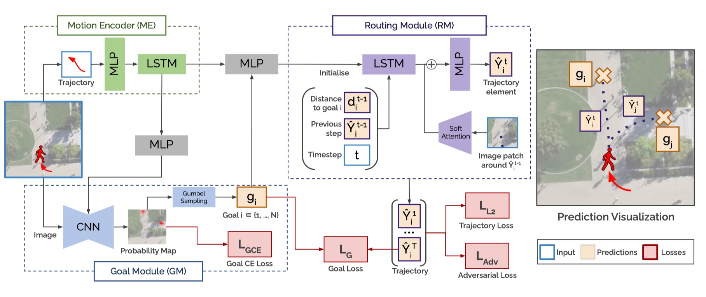
This paper proposes Goal-GAN, a two-stage end-to-end trainable trajectory prediction method inspired by human navigation, which separates the prediction task into goal position estimation and routing. It designs a novel architecture that explicitly estimates an interpretable probability distribution of future goal positions and allows us to sample from it.1. Goal Module:
- RGB image with $H \times W$ as module input
- U-Net as the encoder-decoder CNN network
- Outputs a score map $\alpha = (\alpha_1, \alpha_2,\cdots, \alpha_n)$
- Gumbel-Softmax Loss
2. Motion Encoder
- Simple LSTM block similar to Social GAN
- Aims to extract social features
3. Routing Module
- Consists of an LSTM network, a visual soft attention network (ATT), and an additional MLP layer that combines the attention map with the output of the LSTM iteratively at each timestep.
4. Discriminator:
- 1 x LSTM for observation sequence
- 1 x LSTM for predicted sequence
- CNN for image patch centered around the current position at each time $t$
- 1 x LSTM for final output
5. Losses:
- $L_2$ distance:
- Least Squares Generative Adversarial Network:
- Goal achievement losses:
- Cross-Entropy loss:
- Total Loss:
Spatio-Temporal Graph Transformer Networks for Pedestrian Trajectory Prediction
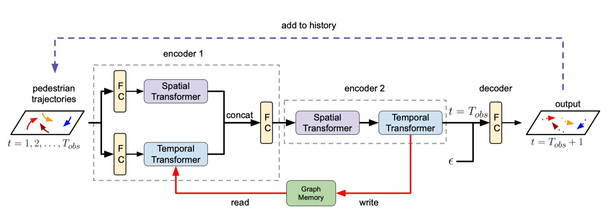
In this paper presents STAR, a Spatio-Temporal grAph tRans- former framework, which tackles trajectory prediction by only attention mechanisms. STAR models intra-graph crowd interaction by TGConv, a novel Transformer-based graph convolution mechanism. The inter-graph temporal dependencies are modeled by separate temporal Transformers. STAR captures complex spatio-temporal interactions by interleav- ing between spatial and temporal Transformers. To calibrate the temporal prediction for the long-lasting effect of disappeared pedestrians, we introduce a read-writable external memory module, consistently being updated by the temporal Transformer.1. Temporal Transformer
2. Spatial Transformer
-
TGConv
- A transformer version of GAT
3. Spatio-Temporal Graph Transformer
- Encoder 1:
- To extract independent spatial and temporal information from the pedestrian history.
- Encoder 2:
- spatial Transformer models spatial interaction with temporal information;
- the temporal Transformer enhances the output spatial embeddings with temporal attentions.
4. External Graph Memory
-
In encoder 1, the temporal Transformer first reads from memory $M$ the past graph embeddings $ {\tilde{h} _1, \tilde{h} _2,\cdots, \tilde{h} _{t-1}} $ and concatenate it with the current graph embedding $h_t$.
-
In encoder 2, the output of Temporal Transformer is written to the graph memory which performs a smoothing over the time series data.
It is not the Journey but the Destination: Endpoint Conditioned Trajectory Prediction
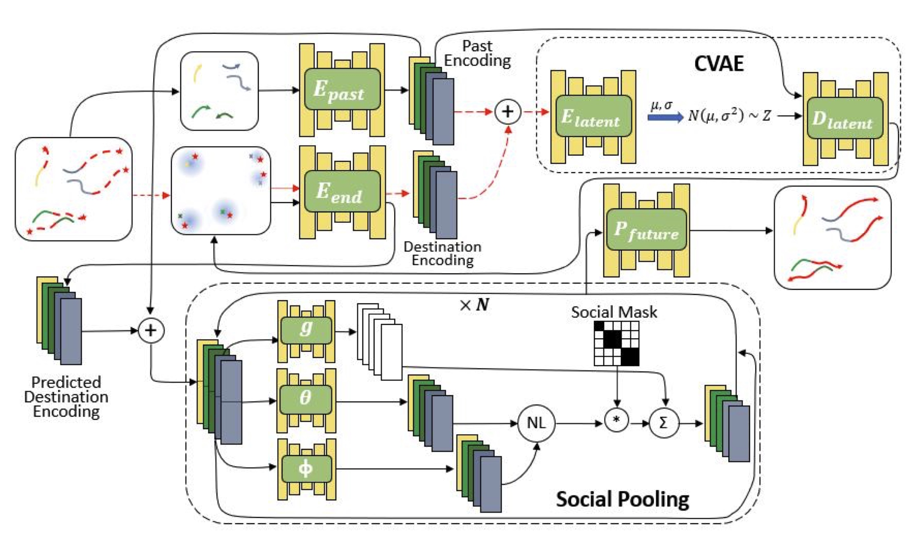
1. Endpoint VAE
- Definition:
- past histories: $\tau^k_p = {(x,y)}_{i=1}^{t_f}$ for pedestrian $p_k$
- socially compliant future trajectories $\tau^k_f = {(x,y)}_{i=t_p + 1}^{t_p+t_f}$ for pedestrian $p_k$.
- finally: $\hat{\mathcal{G}_k}, \mathcal{G}_k = {(x,y)}\rvert _{t_p+t_f} $.
- Detail:
2. Endpoint conditioned Trajectory Prediction
Social Pooling Matrix:
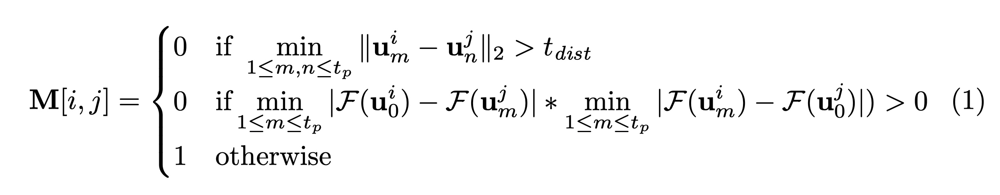
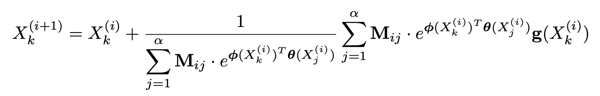
3. Loss
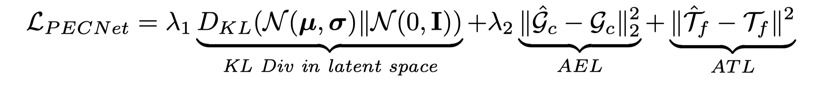
- KL divergence term is used for training the Variational Autoencoder
- the Average endpoint Loss (AEL) trains $E_{end}$, $E_{past}$, $E_{latent}$ and $D_{latent}$
- Average Trajectory Loss (ATL) trains the entire module together.
EvolveGraph: Multi-Agent Trajectory Prediction with Dynamic Relational Reasoning
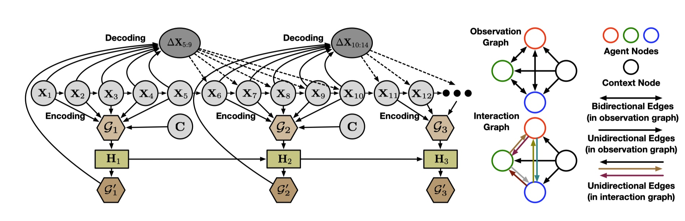
The main contributions of this paper are summarized as:-
It proposes a generic trajectory forecasting framework with explicit interaction modelling via a latent graph among multiple heterogeneous, interactive agents. Both trajectory information and context information (e.g. scene images, semantic maps, point cloud density maps) can be incorporated into the system.
-
It proposes a dynamic mechanism to evolve the underlying interaction graph adaptively along time, which captures the dynamics of interaction patterns among multiple agents. We also introduce a double-stage training pipeline which not only improves training efficiency and accelerates convergence, but also enhances model performance in terms of prediction accuracy.
-
The proposed framework is designed to capture the uncertainty and multi-modality of future trajectories in nature from multiple aspects.
-
The proposed framework is validated on both synthetic simulations and trajectory forecasting benchmarks in different areas. Our EvolveGraph achieves the state-of-the-art performance consistently.
1. Static interact on graph learning
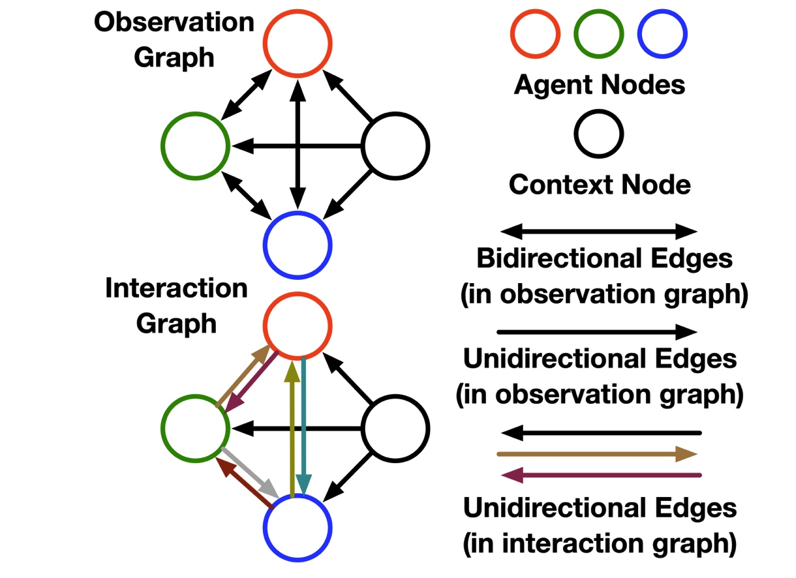
-
Observation Graph aims to extract feature embeddings from raw observations, which consists of N agent nodes and one context node. Agent nodes are bidirectionally connected to each other, and the context node only has outgoing edges to each agent node. Each agent node has two types of attributes: self-attribute and social-attribute. The former only contains the node’s own state information, while the latter only contains other nodes’ state information.
-
Interaction Graph is presented by different edge type. No edge between a pair of nodes means that the two nodes have no relation. The interaction graph represents interaction patterns with a distribution of edge types for each edge, which is built on top of the observation graph.
-
Encoding process is to infer a latent interaction graph from the observation graph, which is essentially a multi-class edge classification task.
-
Recurrent Decoderis applied to the interaction graph and observation graph to approximate the distribution of future trajectories.
2. Dynamic interaction graph
In many situations, the interaction patterns recognized from the past time steps are likely not static in the future. Moreover, many interaction systems have multi-modal properties in nature. Different modalities afterwards are likely to result in different interaction patterns and outcomes. Therefore, we designed a dynamic evolving process of the interaction patterns.
3. Uncertainty and Multi-modality
- Gaussian Mixture distribution in decoder
- Different sampled trajectories will lead to different interaction graph evolution.
- Variety loss
4. Loss
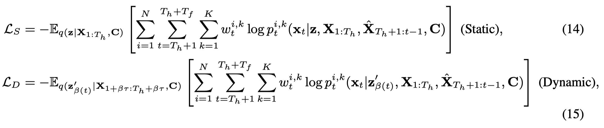
Social-WaGDAT: Interaction-aware Trajectory Prediction via Wasserstein Graph Double-Attention Network
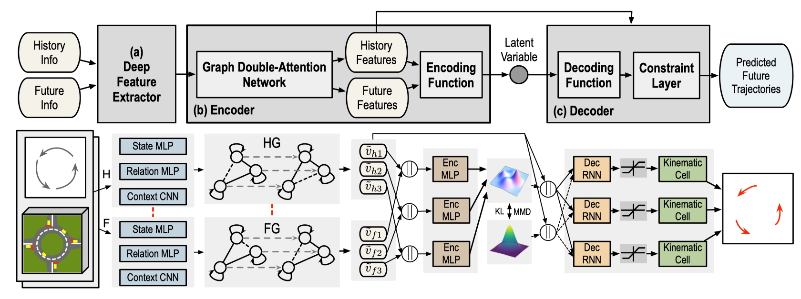
This paper proposes a generic generative neural system (called Social-WaGDAT) for multi-agent trajectory prediction, which makes a step forward to explicit interaction modelling by incorporating relational inductive biases with a dynamic graph representation and leverages both trajectory and scene context information. We also employ an efficient kinematic constraint layer applied to vehicle trajectory prediction which not only ensures physical feasibility but also enhances model performance.1. Feature Extraction
- State MLP embeds the position
-
Relation MLP embeds the relative information between each pair of agents
- The distance and relative angle (in a 2D polar coordinate)
- The differences between the positions of the two agents along two axes
- Context CNN extracts spatial features for each agent from a local occupancy density map $(H \times W \times 1)$ as well as heuristic features from a local velocity field $(H \times W \times 2)$ centered on the corresponding agent.
2. Encoder with Graphic Double Attention(GDAT)
- History Graph & Future Graph
- the state features and context features are concatenated to be the node attributes
- the relation features are used as edge attributes.
- generated and processed in a similar fashion but with different time stamps.
- The number of nodes (agents) in a graph is assumed to be fixed, but the edges are eliminated if the spatial distance between two nodes is larger than a threshold.
- Topological Attention Layer
- the agents with similar node attributes to the objective agent or with small spatial distance should be paid more attention to.
- Temporal Attention Layer
- Input is the output of the topological ¯V attention layer
2. Decoder with Kinematic Constraint
- $x$, $y$ are the coordinates of the center of mass
- $\psi$ is the inertial heading
- $v$ is the speed of the vehicle.
- $\beta$ is the angle of the current velocity of the center of mass with respect to the longitudinal axis of the car
3. Loss Function
- Wasserstein generative learning
- optimization problem:
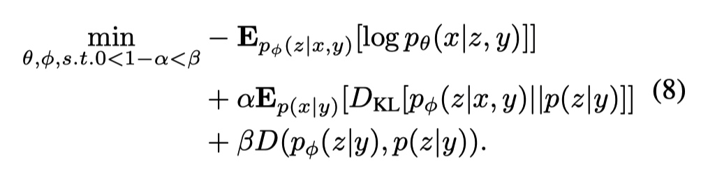
- Loss function:
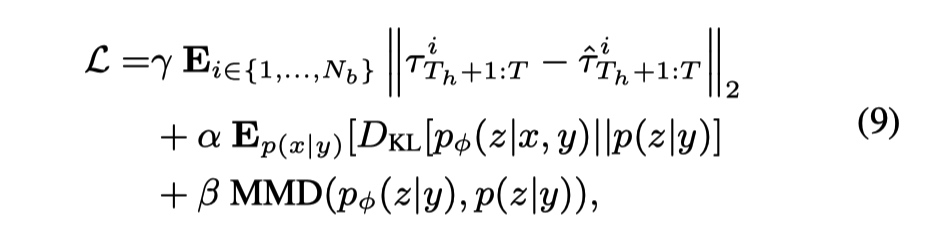
Social NCE: Contrastive Learning of Socially-aware Motion Representations
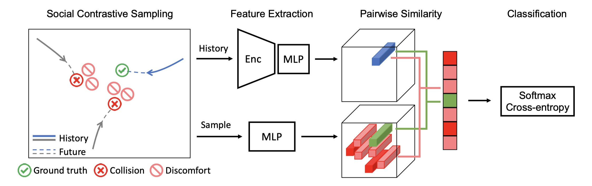
This paper proposes a social contrastive learning method to incorporate prior knowledge into motion representation learning. It adapts this learning approach in the multi-agent context and introduce Social-NCE as an auxiliary loss. Social-NCE encourages the extracted motion representation to preserve sufficient information for distinguishing a positive future event from a set of synthetic knowledge-driven negative events.1. Contrastive Representation Learning
InfoNCE loss: Maximise the lower bound on the mutual information between the raw input and the latent representation.
- $\tau$: temperature hyperparameter
- $q$: encoded query
2. Social NCE
- query: $q = \psi(h_i)$
- key: $k = \phi(s^i_{t+\delta t}, \delta t)$ where $s^i_{t+\delta t} = g(h_i)$ for the future path.
- $\psi$,$\phi$ are MLP layers
Full training objective:
- $L_{task}(f,g)$ can be any convention task loss such as $L_{L_2}$ or Negative Log-Likelihood
3. Multi-agent Contrastive Sampling
- Draw a set of negative samples from the neighborhood of other agents in the future at time $t + \delta t$:
- $j\in { 1,2,\cdots, M }/ i$ is the index of other agents
- $\Delta s_p = (\rho \cos \theta_p, \rho \sin \theta_p )$
Human Trajectory Forecasting in Crowds: A Deep Learning Perspective
This paper presents an in-depth analysis of existing deep learning-based methods for modelling social interactions. It proposes two knowledge-based data-driven methods to effectively capture these social interactions.
Grid Based Interaction Module
Non-Grid Based Interaction Module
Recursive Social Behavior Graph for Trajectory Prediction
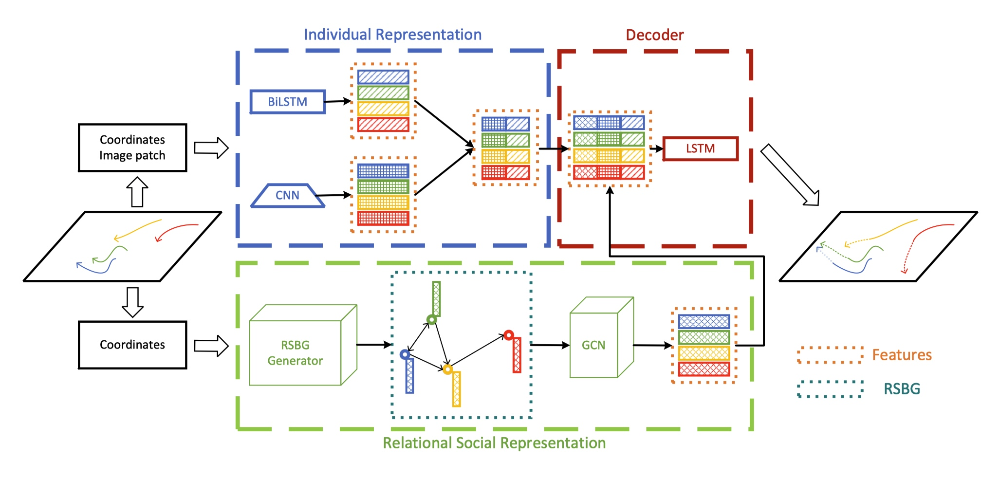
This paper presents a novel insight of group-based social interaction model to explore relationships among pedestrians. It recursively extract social representations supervised by group-based annotations and formulate them into a social behaviour graph, called Recursive Social Behavior Graph. Its recursive mechanism explores the representation power largely. Graph Convolutional Neural Network then is used to propagate social interaction information in such a graph.1. Individual Representation
- Historical Trajectory feature
- Vanilla LSTM $\rightarrow$ BiLSTM
- Human context feature
- For each time $t$, a image patch $s_i^t$ centered on $(x_i^t,y_i^t)$ is fed to $CNN$ to $V_i$
2. Relational Social Representation
- Relational Labeling:
- using 0/1 to represent whether two pedestrians are in the same group
- Experts with sociology background determined
- Feature design
- Relation map: $R = softmax(g_s(F)g_o(F)^T) \in R^{N\times N}$
- Feature map $f_i \in F \in R^{N \times L}$
- $g_s$ and $g_o$ are fully connection network
3. Recursive Social Behaviour Graph
- For initialization, features in $F_0$ are historical trajectories in global coordinate.
- $k$ is the depth
4. Trajectory Generation
5. Loss
Exponential $L_2$ loss to consider FDE:
Social and Scene-Aware Trajectory Prediction in Crowded Spaces
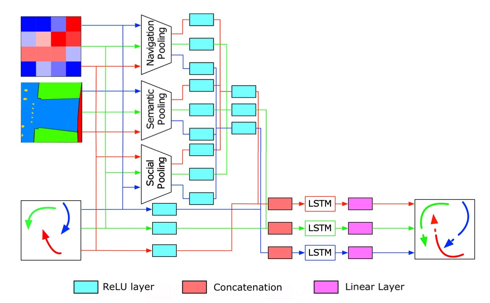
This paper constructs an LSTM (long short-term memory)-based model considering three fundamental factors: people interactions, past observations in terms of previously crossed areas and semantics of surrounding space. The model encompasses several pooling mechanisms to join the above elements defining multiple tensors, namely social, navigation and semantic tensors.Navigation Tensor
Semantic Tensor
Social Tensor
SR-LSTM: State Refinement for LSTM towards Pedestrian Trajectory Prediction
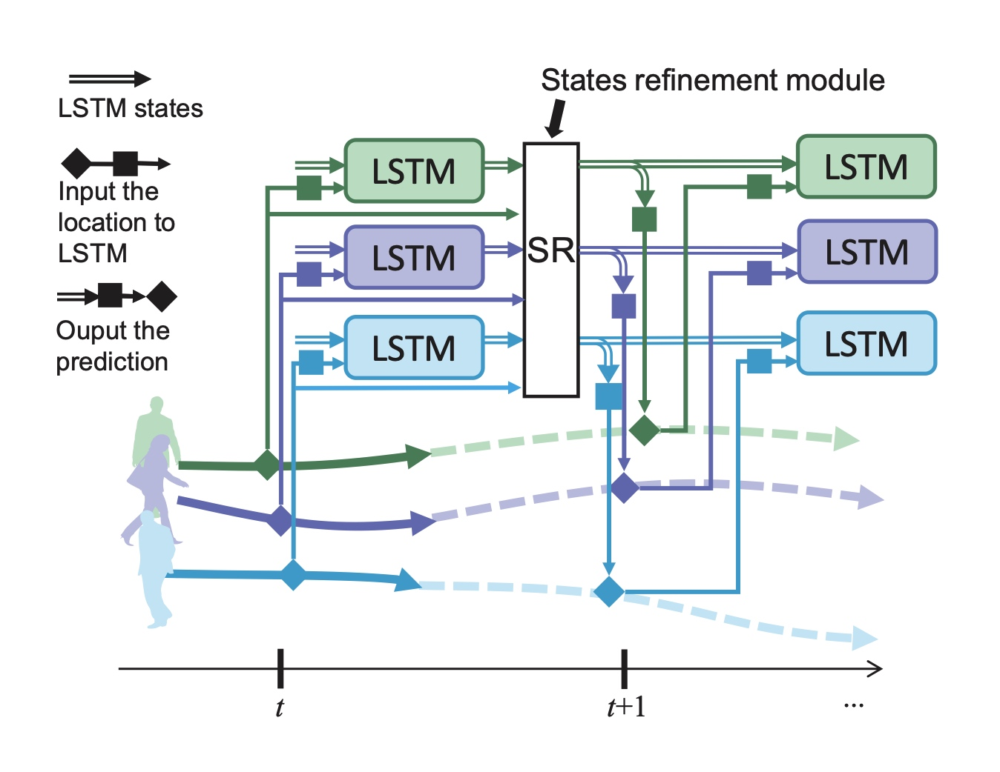
Many methods rely on previous neighboring hidden states but ignore the important current intention of the neighbors.
This paper proposes a data-driven state refinement module for LSTM network (SR-LSTM), which activates the utilization of the current intention of neighbors, and jointly and iteratively refines the current states of all participants in the crowd through a message passing mechanism. To effectively extract the social effect of neighbors, it further introduces a social-aware information selection mechanism consisting of an element-wise motion gate and a pedestrian-wise attention to select useful message from neighboring pedestrians.
1. SR-LSTM Framework
- Vanilla cell state in LSTM
- $g$ donate the gate function
- Cell state in SR-LSTM
- $M$ is the message passing function
- $N(i)$ donates the neighbours of pedestrain $i$
- $l$ denotes the message passing iteration index.
2. Message Passing Function
Here
- The donates the number of elements in $N(i)$
- The $W^{mp}$ is a linear transformation using for transmitting the message from neighboring pedestrians to the pedestrian $i$.
3. Social-aware information selection
-
Pedestrian-wise attention $ \alpha_{i,j}^{t,l} $ is attention weight vector
- The relative spatial location $r_{i,j}^{t,k} = \phi _r (x_i^t - x_j^t, y_i^t - y_j^t; W^T) $
-
Motion gate
Multi-Agent Tensor Fusion for Contextual Trajectory Prediction
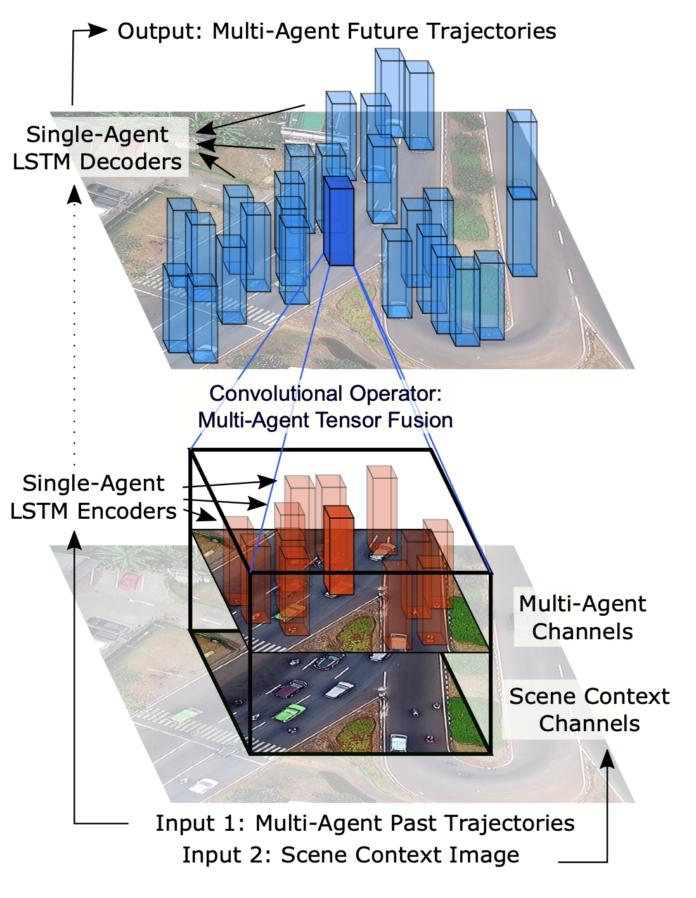
Multi-Agent Tensor Fusion(MATF) encodes multiple agents’ past trajectories and the scene context into a Multi-Agent Tensor, then applies convolutional fusion to capture multi-agent interactions while retaining the spatial structure of agents and the scene context. The model decodes recurrently to multiple agents’ future trajectories, using adversarial loss to learn stochastic predictions.1.Scene and Social Feature generation
-
The outputs of the LSTM encoders are 1-D agent state vectors: $ {x_1’, x_2’, \cdots, x_n’ } = LSTM({x_1, x_2, \cdots, x_n })$ at time $t = t_{final}$.
-
The output of the scene context encoder $CNN$ is a scaled feature map $c’ = CNN(I)$ retaining the spatial structure of the bird’s-eye view static scene context image.
2. Tensor Fusion
-
Agent encodings ${x_1’, x_2’, \cdots, x_n’ }$ are placed into one bird’s-eye view spatial tensor, which is initialized to 0 and is of the same shape (width and height) as the encoded scene image $c′$.
-
The agent encodings are placed into the spatial tensor with respect to their positions at the last time step of their past trajectories.
-
This tensor is then concatenated with the encoded scene image in the channel dimension to get a combined tensor, say Multi-agent Tensor.
3. Interaction Learning
- U-Net-like architectures to model interaction at different spatial scales: $C’’ = CNN(C’)$ with retaining shape.
4. Decoding
-
The fused interaction features for each agent ${ x_1’’, x_2’’, \cdots, x_n’’ }$ are extracted according to their coordinates on $C’’$
-
The final agent encoding vectors ${ x_1’ + x_1’’, x_2’ + x_2’’, \cdots, x_n’ + x_n’’ }$
-
Finally, the final agent encoding vectors are sent to LSTM to get $\hat{y}_i$.
Looking to Relations for Future Trajectory Forecast
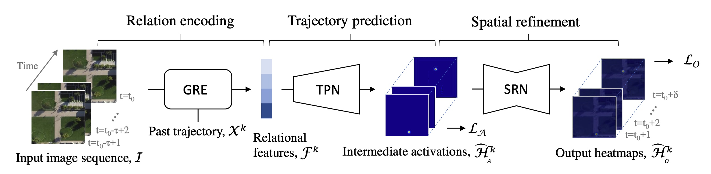
The main contributions of this paper are as follows:
-
Encoding of spatio-temporal behavior of agents and their interactions toward environments, corresponding to human-human and human-space interactions.
-
Design of relation gating process conditioned on the past motion of the target to capture more descriptive relations with a high potential to affect its future
-
Prediction of a pixel-level probability map that can be penalized with the guidance of spatial dependencies and extended to learn the uncertainty of the problem.
-
Improvement of model performance by 14−15% over the best state-of-the-art method using the proposed framework with aforementioned contributions.
1. Spatio-Temporal Interactions
-
Spatial representations: $S = {s_1,s_2,\cdots,s_n } = CNN2D(I_t) \in \mathbb{R}^{\tau \times d \times d \times c}$
-
Spatio-temporal features: $O = CNN3D(S)$
-
the joint use the joint use of 2D conv for spatial modelling and 3D for temporal model outperforms methods:
- 3D for all
- 2D + LSTM
2. Relation Gate Module:
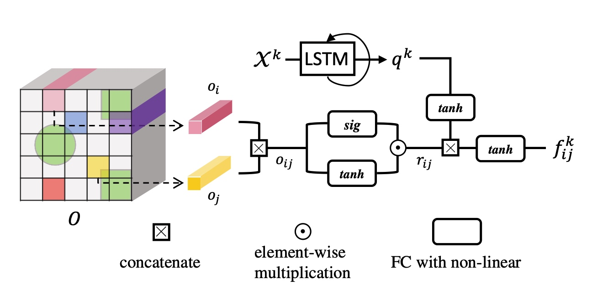
- relational features $F^k \in \mathbb{R}^{1 \times w} $
3. Trajectory Prediction Network
-
Heatmap $\hat{H} _A^k = a _{\psi}(F^k)$ where $a _{\psi} $ is a set of deconvolutional layers with Relu.
-
Corrected using $L_2$ loss
4. Refinement with Spatial Dependencies
- Problem: a lack of spatial dependencies among heatmap predictions
5.Uncertainty of Future Prediction
- Embeds the uncertainty of future prediction by adopting Monte Carlo (MC) dropout